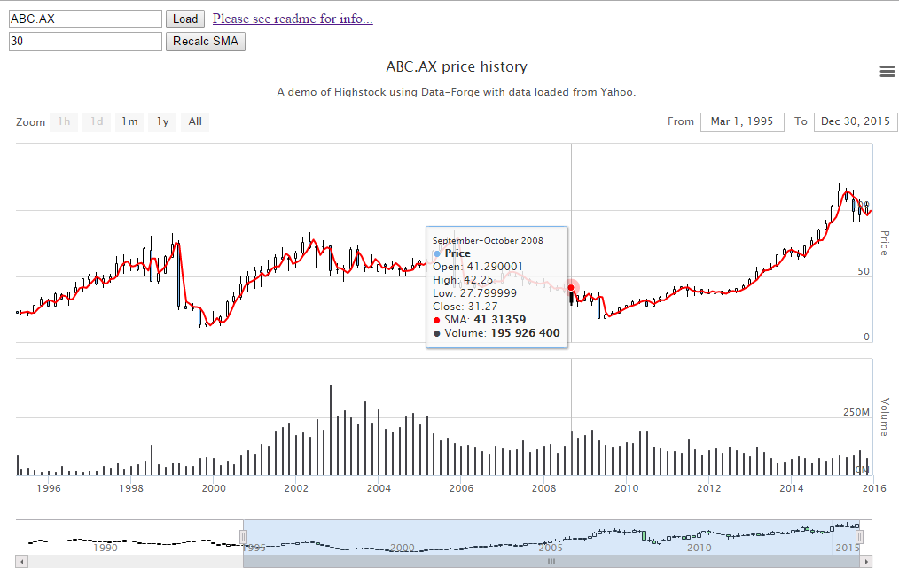

Article also hosted on GitHub.
This post accompanies and explains my demonstration of Highstock charts using data from Yahoo's financial API. It is aimed at developers interested in processing and visualisation of financial data. You should have at least a basic knowledge of JavaScript and jQuery. Most of the useful information you'll find by studying the accompanying example code, in this post I'll give a brief overview of the technology and how it fits together.
This post introduces the open-source Data-Forge library which is a prototype and a work in progress. I am the main developer of Data-Forge and I want to bring attention to it and elicit feedback.
I also want to promote Highstock and the Yahoo financial API. I have nothing to do with either of these, I am promoting them purely as an enthusiastic user. I have found them both to be mature and stable and extremely useful.
The associated example code shows how to use Data-Forge (and various plugins) in the browser. With small variations all the Data-Forge and Yahoo code works under Node.js as well. Highstock is made for the browser and doesn't work (at least not easily) under Node.js.
The live demo is published directly from the GitHub repo using Github Pages.
This example demonstrates the following:
A zip of the code is attached to this article.
To stay up-to-date I recommend that you clone or fork the GitHub repo. You can also download an up-to-date zip of the code from GitHub.
To run the code locally you need a local copy of the code. Then run a web server in that directory. I recommend installing Node.js and http-server. Once you have these both installed (which isn't difficult, at least on Windows), running a web server is as simple as:
cd highstock-yahoo-demo
http-server
You can now put http://localhost:8080 in your browser to see it running.
In case the live demo is down... here is a screenshot.

Highstock is a pure Javascript, client-side stock charting library that is free for non-commercial use. The company behind Highstock, Highsoft, also have a general charting library called Highcharts. Highsoft have many commercial customers and their libraries are stable and mature.
For this example code I started with the Highstock async loading demo. I also incorporated elements of the candlestick and volume demo.
There are many other demos of Highstock that give a good undestanding of its full capabilities. Highstock also has good docs and an API reference. Read these docs for a full understand of Highstock.
The basic setup for Highstock is quite simple. Use jQuery to get the element that will contain the chart and call the highcharts function. Pass in the options to configure the chart and provide data:
var chartOptions = {
// ... options that defined the chart ...
};
$('#container').highcharts('StockChart', chartOptions);
The chart options allow us to set the chart type, axis options and initial data.
Multiple data series can be stacked on top of each other. This is how the SMA is overlaid on the OHLC data. Multiple Y axis' can be stacked separately on top of each other, as is done in this example with the volume chart below the OHLC/SMA chart.
In the example code I use the chart types: candlestick, line and column. There are many more chart types available. The OHLC chart type is another you might be interested in that is relevant to financial data.
This example loads data asynchronously when the user zooms in on the data. Initially full data must be loaded so that Highstock has something to show in its navigator. The navigator allows the user to see the entire time series and zoom in on parts of it. It is very expensive to download full daily financial data for any company, therefore initially only monthly data is downloaded. Then as the user zooms in for a closer look weekly or daily data is downloaded as needed. This helps keep our data load minimal and our load time responsive.
Highcharts supports asyncronous data download via the afterSetExtremes event. You can also see a fairly simple example of this in the Highstock async loading demo. It looks something like this:
//
// Function called when the user changes the zoom level of the chart.
//
var afterSetExtremes = function (event) {
var fromDate = new Date(event.min);
var toDate = new Date(event.max);
// ... load new data in the requested date range ...
};
var chartOptions = {
// ...
xAxis: {
events: {
afterSetExtremes: afterSetExtremes, // Wire up the event handler.
},
// ...
},
// ...
};
The Yahoo financial REST API is fantastic and possibly the only free financial API. It is a ready source of share market data. Unfortunately it can be difficult to get started as there seems to be little documentation besides community-contributed content.
The basic URL structure looks like this:
http://ichart.yahoo.com/table.csv?s=<company-code>
For example you can pull full data (served in CSV format) for Microsoft with this URL: http://ichart.yahoo.com/table.csv?s=MSFT (click and see).
The downloaded CSV file can be viewed in a text editor or Excel (or something similar).
The URL can also have a interval parameter:
http://ichart.yahoo.com/table.csv?s=<company-code>&g=<interval-code>
Valid interval codes are:
For example to retrieve Microsoft data with a monthly interval: http://ichart.yahoo.com/table.csv?s=MSFT&g=m
The URL can also have parameter that specifies a date range that constrains the returned data to a particular period of time:
http://ichart.yahoo.com/table.csv?s=<company-code>&a=<from-month>&b=<from-date>&c=<from-year>&d=<to-month>&e=<to-date>&f=<to-year>
Note that Yahoo expects a zero-based month. This is the same as the JavaScript Date class.
For example to retrieve Microsoft data for the last few months of 2015: http://ichart.yahoo.com/table.csv?s=MSFT&a=9&b=1&c=2015&d=11&e=31&f=2015
Of course, the example code doesn't directly hit the Yahoo API. Data-Forge has a convenient plugin data-forge-from-yahoo to pull data from Yahoo. The fromYahoo function returns a promise that resolves to a data frame that contains the data returned from Yahoo, which looks like this:
var dataForge = require('data-forge');
dataForge.use(require('data-forge-from-yahoo'));
dataForge.fromYahoo('MSFT')
.then(function (dataFrame) {
console.log(dataFrame.take(5).toString());
})
.catch(function (err) {
// ... error handling ...
});
Output:
__index___ Date Open High Low Close Volume Adj Close ---------- -------------------------------------------------------------- --------- --------- --------- --------- -------- --------- 0 Mon Jan 04 2016 00:00:00 GMT+1000 (E. Australia Standard Time) 54.32 54.799999 53.389999 54.799999 52843200 54.799999 1 Thu Dec 31 2015 00:00:00 GMT+1000 (E. Australia Standard Time) 56.040001 56.189999 55.419998 55.48 26529600 55.48 2 Wed Dec 30 2015 00:00:00 GMT+1000 (E. Australia Standard Time) 56.470001 56.779999 56.290001 56.310001 21650300 56.310001 3 Tue Dec 29 2015 00:00:00 GMT+1000 (E. Australia Standard Time) 56.290001 56.849998 56.060001 56.549999 27489200 56.549999 4 Mon Dec 28 2015 00:00:00 GMT+1000 (E. Australia Standard Time) 55.349998 55.950001 54.98 55.950001 21698000 55.950001
The above code will work either under Node.js or the browser. The main difference is the way Data-Forge is installed, which I'll cover in the next section.
Internally there is a major difference. Under the browser, due to cross-original resource sharing (CORS) restrictions, we can't directly pull data from the the Yahoo API the way we can under Node.js. For this reason a proxy URL specified to data-forge-from-yahoo that uses to proxy the Yahoo REST API. (Using http://cors.io as the proxy service). The proxy URL can also be set explicitly to any custom proxy URL desired by the user.
This example uses Data-Forge, an open-source data analysis and transformation toolkit for JavaScript that is inspired by Pandas and LINQ (I'm also working on a C# version). Data-Forge is a work in progress and is at the prototype stage, so please use with care. I'm the main developer and keen to bring attention to it at this stage to elicit feedback and help solidify its direction. I'm also working on a larger system for financial analysis, tracking investments and automation, the Investment Tracker, which is also a prototype and a work in progress.
You can install Data-Forge for the browser via bower:
bower install --save data-forge
Or for Node.js via npm:
npm install --save data-forge
This example also has installed various plugins:
bower install --save data-forge-from-yahoo
bower install --save data-forge-to-highstock
bower install --save data-forge-indicators
Or
npm install --save data-forge-from-yahoo
npm install --save data-forge-to-highstock
npm install --save data-forge-indicators
To use Data-Forge in the browser you simply include the script files for Data-Forge and plugins in the HTML file:
<script src="bower_components/data-forge/data-forge.js"></script>
<script src="bower_components/data-forge-from-yahoo/from-yahoo.dist.js"></script>
<script src="bower_components/data-forge-to-highstock/to-highstock.dist.js"></script>
<script src="bower_components/data-forge-indicators/indicators.dist.js"></script>
For Node.js require in the main module then use the plugins:
var dataForge = require('data-forge');
dataForge.use(require('data-forge-from-yahoo'));
dataForge.use(require('data-forge-to-highstock'));
dataForge.use(require('data-forge-indicators'));
Like a swiss-army knife, Data-Forge does many things, but what does data-forge do for us in this example?
Let's see...
A simple moving average (SMA) is computed and overlaid as a line chart on the OHLC chart. Simple moving average is a basic financial indicator that smooths the frequent fluctations in the share market to allow broader trends to be identified. This is very simple to achieve using the Data-Forge rollingWindow function:
var computeSMA = function (column, period) {
return column.rollingWindow(period,
function (indices, values) {
return [
indices[indices.length-1],
Enumerable.from(values).sum() / period
];
}
);
};
var dataFrame = ...
var smaPeriod = 30;
var close = dataFrame.getSeries('Close');
var sma = computeSMA(close, smaPeriod);
var dataFrameWithSMA = dataFrame.setSeries('SMA', sma);
console.log(dataFrameWithSMA.toString());
data-forge-indicators provides a convenient function to compute the SMA, so using the code can be even simpler:
var smaPeriod= 30;
var sma = dataFrame.getSeries('Close').sma(smaPeriod);
var dataFrameWithSMA = dataFrame.setSeries('SMA', sma);
console.log(dataFrameWithSMA.toString());
The example code relies on jQuery mostly for event handling. For example, basics like detecting button clicks and changes in input fields. In response to various events the Highstock chart is updated and re-rendered as necessary.
The most interesting event handler is for the window resize event. It would be great if we could handle an event for a particular HTML element (eg the container div for our chart). However this doesn't appear to be possible and we must handle resize for the entire window update the chart accordingly. This isn't the most flexible approach but it works when you want your chart to be sized according to the size of the window (or near enough). It is surprisingly difficult to figure out how to do this and it doesn't feel like the most elegant solution, however like so many other decisions in web development it often comes down to whatever works.
So we end up with a simple event handler for window resize:
$(window).resize(function() {
resizeChart();
});
The resizeChart function updates the size of the Highstock chart:
var resizeChart = function () {
var chart = $('#container').highcharts();
chart.setSize($(window).width(), $(window).height()-50);
};
resizeChart is also called after chart creation to ensure that the chart is immediately set to the correct size. An unusual consequence of this is the that chart data is reloaded immediately after the initial data load (it doesn't happen when the chart's size is adjusted in the future). We don't want our data loading twice, that makes the app slower to load and kind of defeats the purpose of our optimized asynchronous loading. To counter this behaviour I modified resizeChart to set resizingChart to true while the resize is in progress:
var resizeChart = function () {
try {
resizingChart = true; // Track that we are resizing.
var chart = $('#container').highcharts();
chart.setSize($(window).width(), $(window).height()-50);
}
finally {
// Finally clause ensures we never leave dangling state
// should an exception be thrown.
resizingChart = false; // Finished resizing.
}
};
Now we have resizingChart to test and subsequently abort data loading when the chart is being resized. Not the most elegant solution, but a good workaround for odd behaviour from Highstock.
After recently realizing there was a rendering issue with the volume chart I contacted Highsoft for support. They got back to me very quickly with some suggestions, one of which worked so I've updated this article with the new information.
As mentioned above, I was calling resizeChart immediately after creating the chart to force it to adopt the size of the window. Something about this was causing the rendering issue. I had already figured out that the issue was something to do with resizing. Resizing the window (which updates the chart size) was causing the rendering issue to disappear.
Per Highsoft's recommendation I added code to set the size of the chart on creation, rather than sizing it after creation. This change was simple. Chart width and height are now specified in the chart options:
var chartOptions =
{
chart: {
width: $(window).width(),
height: $(window).height()-50
},
// ... all the other options ...
};
The chart's correct initial size is therefore set on creation and I was able to remove the subsequent call to resizeChart. Problem solved.
Note that resizeChart is still used to adjust the chart size after the window is resized, but it is no longer needed to set the chart's initial size.
Through this post I have introduced Data-Forge and the Investment Tracker. Data-Forge is an open-source data analysis and transformation toolkit. The Investment Tracker is platform for financial analysis and automation. Both are prototypes and work in progress and I'll appreciate constructive criticism.
For Data-Forge I'm looking for users and contributors. Please help drive this project forward in whatever way you can!
In the example code I've demonstrated how to retrieve financial data from Yahoo and visualise it using Highstock. I've provided a brief overview of how the pieces fit together and shown how Data-Forge makes it all a bit simpler.